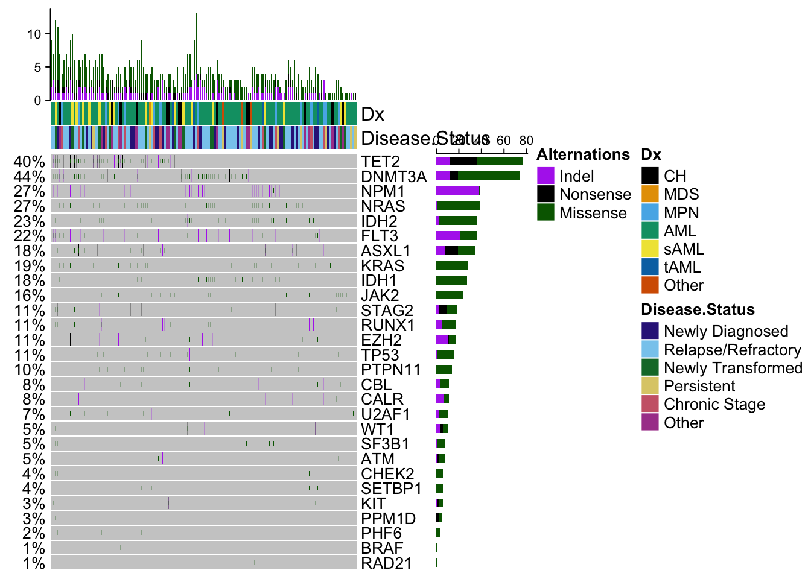
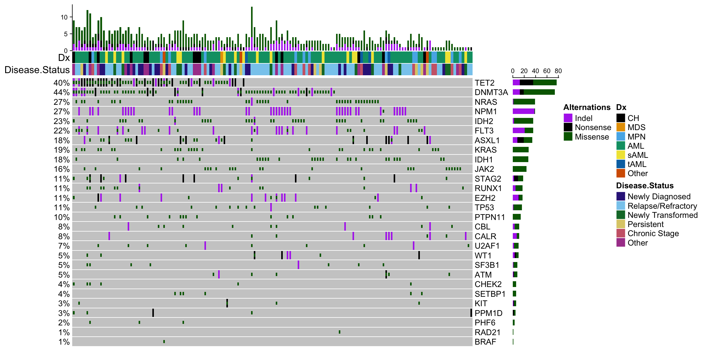

3.1 Figure 1: Cohort characterization
Let’s start by loading in some packages that are recurrently used. Other packages that are only used in one chunk of code are listed appropriately below.
library(dplyr)
library(tidyr)
library(ggplot2)Here we will focus on the cohort level analysis, and load in the NGT files before they were filtered for clonality.
setwd("/Users/bowmanr/Projects/scDNA")
final_NGTs<-readRDS(file="./data/final_NGTs.rds")
pheno<-readRDS(file="./data/pheno.rds")One filter we put in was to exclude samples <100 cells.
high_quality_samples<-names(final_NGTs)[sapply(names(final_NGTs),function(x){
nrow(final_NGTs[[x]])>100
})]Next we want a catalogue of all mutations so we can determine how many patients were mutated for each gene and how many different mutations were seen in total for each gene.
final_mut_melt<-do.call(rbind,lapply(names(final_NGTs),function(x){
data.frame("Sample"=x,
"Mutation"=colnames(final_NGTs[[x]]),
"Gene"=do.call(rbind,strsplit(colnames(final_NGTs[[x]]),split="[:_]"))[,1])
}))Next pages will go into how we made each of the Figures.
3.1.1 Cohort characteristics (EF1A-D)
Now we can start to make the plots that are in Extended Figure 1. Starting with the total number of mutations identified per gene
## Set the levels of the Gene column from most to least prevalent for plotting purposes
final_mut_melt$Gene<- factor(final_mut_melt$Gene,levels=names(sort(table(final_mut_melt$Gene), decreasing=TRUE)))
gg_mut_count<-ggplot(final_mut_melt,aes(x=Gene))+
geom_bar(stat="count")+
theme_classic(base_size = 10)+
ylab("Count")+
ggtitle("Number of mutations")+
theme(axis.text.x = element_text(angle=45, hjust=1,vjust=1),
plot.title=element_text(hjust=0.5))+
scale_y_continuous(expand=c(0,0))Total number of patients mutated for each gene
## tally of how many mutations per patient
melted_mut_mat<- final_mut_melt%>%count(Gene, Sample)
## Set the levels of the Gene column from most to least prevalent for plotting purposes
melted_mut_mat$Gene<- factor(melted_mut_mat$Gene,levels=names(sort(table(melted_mut_mat$Gene),decreasing=TRUE)))
gg_mut_patient<-ggplot(melted_mut_mat,aes(x=Gene))+
geom_bar(stat="count")+
theme_classic(base_size =10)+
ylab("Count")+ggtitle("Number of patients with mutation")+
theme(axis.text.x = element_text(angle=45,hjust=1,vjust=1),
plot.title=element_text(hjust=0.5))+
scale_y_continuous(expand=c(0,0))Number of mutated genes per patient
gg_mutated_genes_per_patient<-final_mut_melt%>%
distinct(Sample,Gene)%>%
group_by(Sample)%>%
tally%>%
ggplot(aes(x=n))+geom_bar()+
ylab("Count")+
xlab("Number of genes")+
ggtitle("Mutant genes per patient")+
theme_classic(base_size = 10)+
theme(plot.title=element_text(hjust=0.5))+
scale_y_continuous(expand=c(0,0))+
scale_x_continuous(expand=c(0,0),n.breaks=8)Total number of mutations per patient
gg_mutations_per_patient<- final_mut_melt%>%
group_by(Sample)%>%
tally%>%
ggplot(aes(x=n))+geom_bar()+
theme_classic(base_size = 10)+
theme(plot.title=element_text(hjust=0.5))+
ylab("Count")+ggtitle("Variants per patient")+xlab("Number of variants")+
scale_y_continuous(expand=c(0,0))+
scale_x_continuous(expand=c(0,0),n.breaks=6)library(cowplot)
plot_grid(gg_mut_count,gg_mut_patient,
gg_mutated_genes_per_patient,gg_mutations_per_patient,
ncol=2,align="hv",axis="ltrb",
labels = "AUTO")Figure 3.1: Extended Figure 1A-D
An extra plot worth noting is below, which plots the number of cells per sample, after we filterd out all of the “3” uniformative genotyped cells.
### Cells per sample
data.frame("Cells"=do.call(rbind,lapply(final_NGTs,nrow)))%>%
ggplot(aes(x=Cells))+geom_histogram(binwidth = 100)+
theme_classic(base_size = 10)+
theme(plot.title=element_text(hjust=0.5))+
ylab("Count")+ggtitle("Informative Cells per Sample")+
scale_y_continuous(expand=c(0,0))+
scale_x_continuous(expand=c(0,0),n.breaks=8)
3.1.2 Mutation Co-occurence
Next we want to make the co-occurence matrix on a sample level
library(cooccur)
### create matrix for oncoprint
mut_mat <- table(melted_mut_mat$Sample,melted_mut_mat$Gene)
### Prepare matrix for co occurence map
cooccur_mat <- cooccur(mat=t(mut_mat), type="spp_site",
only_effects = FALSE,eff_matrix=TRUE,
thresh=FALSE, eff_standard=FALSE,spp_names=TRUE)$results
## Denote which interactions are significantly inclusive or exclusive
# The 'add_row' function generates a new line, but it gets removed later.
# This is helpful for setting the order of the gene labels below.
cooccur_data_mat <- cooccur_mat%>%
mutate(score=ifelse(p_lt<=0.05,-1,
ifelse(p_gt<=0.05,1,0))) %>%
select(sp1_name,sp2_name,score)%>%
add_row(sp2_name=setdiff(.$sp1_name,.$sp2_name),
sp1_name=setdiff(.$sp2_name,.$sp1_name),
score=0)
#check out the final that we added so we can remove it later
tail(cooccur_data_mat)
# Order the genes in a coherent pattern for triangle strucutre of graph.
cooccur_data_mat$sp1_name<-factor(cooccur_data_mat$sp1_name,
levels=unique(cooccur_data_mat$sp1_name))
cooccur_data_mat$sp2_name<-factor(cooccur_data_mat$sp2_name,
levels=rev(levels(cooccur_data_mat$sp1_name)))
# Triangle heatmap to compare cohorts
grob_corrplot<-ggplot(cooccur_data_mat%>%filter(sp1_name!="BRAF"),aes(x=sp1_name,y=sp2_name))+
geom_tile(aes(fill = factor(score)), color='grey90') +
scale_fill_manual(name="Correlation",
values=c("-1"="firebrick3",
"0"="white",
"1"="steelblue2"),
labels=c("Mutually Exclusive",
"Not Significant",
"Mutually Inclusive"))+
theme_classic(base_size=10)+
xlab("")+ylab("")+
theme(axis.text.x=element_text(angle=45,hjust=1,vjust=1),
axis.line = element_blank(),
legend.position = c(0.8,1),
legend.justification = c(1, 1),
legend.direction = "vertical")+
theme(legend.key.size = unit(0.5,"line"))
grob_corrplot
3.1.3 Oncoprint: Figure 1A
Now we are going to make the oncoprint that is in Figure 1A. Check out this example from the ComplexHeatmap package for a better understanding of why things are formatted the way they are.
library(pals) # great package with color palettes in R
library(ComplexHeatmap) #used for making the oncoprint
#Here we will identify whether a variant is an indel, Nonsense or Missense mutation
#Next we group samples together and pivot the matrix into wide format
fill_values <-setNames(as.list(rep(0,length(levels(final_mut_melt$Gene)))),levels(final_mut_melt$Gene))
mut_mat_wide<-final_mut_melt%>%
mutate(Variant_Class=ifelse(grepl("fs\\*|INS_|ins|ext|del",.$Mutation),"Indel",
ifelse(grepl("\\*$",.$Mutation),"Nonsense","Missense")))%>%
mutate_at(c("Gene","Variant_Class","Sample"),as.character())%>%
group_by(Sample)%>%
pivot_wider(id_cols=Sample,
names_from = Gene,
values_from = Variant_Class,
values_fn = list(Variant_Class =list),
values_fill = list(Variant_Class = " ")) %>%
ungroup(Sample)%>%data.frame()
# At this point, each column is actually a list, and variants are represnted as a list within a list.
# So we want to unpack it a bit, and turn those variant lists in a ; separated vector
mut_mat_wide_storage <- list()
for(i in 2:ncol(mut_mat_wide)){ # start at 2 to ignore the first column of sample names
mut_mat_wide_storage[[i]]<- do.call(rbind,lapply(mut_mat_wide[,i],function(x){
if(x==" "){
return(x)
} else{
paste(x,sep=";",collapse=";")
}
}
))
}
## The rest of this just turns this back into a matrix in the format suggested by ComplexHeatmap
mut_mat_wide_storage[[1]] <- as.character(mut_mat_wide[,"Sample"])
final_mat <- do.call(cbind,mut_mat_wide_storage)
colnames(final_mat) <- colnames(mut_mat_wide)
rownames(final_mat) <- final_mat[,1]
final_mat <- t(final_mat[,-1])
#Now we set up the color schemes for the variants on each row
variant_type_colors = c("Indel" = "darkorchid2", "Nonsense" = "black", "Missense" = "darkgreen")
alter_functions = list(
background = function(x, y, w, h) {
grid.rect(x, y, w, h-unit(0.25, "mm"),
gp = gpar(fill = "#CCCCCC", col = NA))
},
Indel = function(x, y, w, h) {
grid.rect(x, y, w-unit(0.5, "mm"), h-unit(0.5, "mm"),
gp = gpar(fill = variant_type_colors["Indel"], col = NA))
},
Nonsense = function(x, y, w, h) {
grid.rect(x, y, w-unit(0.5, "mm"), h-unit(0.5, "mm"),
gp = gpar(fill = variant_type_colors["Nonsense"], col = NA))
},
Missense = function(x, y, w, h) {
grid.rect(x, y, w-unit(0.5, "mm"), h*0.33,
gp = gpar(fill = variant_type_colors["Missense"], col = NA))
}
)
# Establish colors for each disease state and diagnosis
color_set <- list("Dx" = setNames(okabe(n=length(unique(as.character(pheno[,"Dx"])))),
c( "CH","MDS","MPN", "AML", "sAML" ,"tAML","Other") ),
"Disease.Status" = setNames(tol(n=(length(unique(as.character(pheno[,"Disease.Status"]))))),
c("Newly Diagnosed","Relapse/Refractory","Newly Transformed",
"Persistent","Chronic Stage", "Other")))
# Format the annotations at the top of the oncoprint
top_annotation <- HeatmapAnnotation(cbar = anno_oncoprint_barplot(),
df = pheno[,c("Dx","Disease.Status")],
col = color_set,
annotation_name_side = "left")
# Indicate what should be included in the legend
heatmap_legend_param <- list(title = "Alternations",
at = c("Indel", "Nonsense", "Missense"),
labels = c("Indel", "Nonsense", "Missense"))
# Make the oncoprint
oncoPrint(final_mat,
alter_fun = alter_functions,
col = variant_type_colors,
top_annotation = top_annotation,
heatmap_legend_param = heatmap_legend_param)
3.1.4 Sample clonality: Figure 1C,E Figure 2A,B
Now we focused on patient samples that were included in the clonality analysis. This the filtered set o f patients that had >100 cells, more than 1 mutation, and more than 1 clone following bootstrapping and estalbishing 95% confidence inervals > 10 cells.
final_sample_summary<-readRDS(file="./data/final_sample_summary.rds")
pheno<-readRDS(file="./data/pheno.rds")Next we are going to build a data frame indicating the mutation status of various patients with regard to epigenetic modifiers (DNMT3a,TET2, ASXL1, IDH1/2, DTAI) and signalling genes (FLT3, vs JAK2 vs NRAS/KRAS)
library(magrittr) # for %<>%
#Tabulate presence/absence of a mutation
mutants_in_each_sample<-do.call(rbind,lapply(names(final_sample_summary),function(x){
y<-colnames(final_sample_summary[[x]]$NGT)
z <- list()
z$Sample <- x
z$DNMT3A <- ifelse(any(grepl("DNMT3A",y)),1,0)
z$TET2 <- ifelse(any(grepl("TET2",y)),1,0)
z$ASXL1 <- ifelse(any(grepl("ASXL1",y)),1,0)
z$IDH <- ifelse(any(grepl("IDH",y)),1,0)
z$FLT3 <- ifelse(any(grepl("FLT3",y)),1,0)
z$KIT <- ifelse(any(grepl("KIT",y)),1,0) # n=1 sample, we put it in the "signalling category"
z$RAS <- ifelse(any(grepl("RAS",y)),1,0)
z$JAK2 <- ifelse(any(grepl("JAK2",y)),1,0)
z$PTPN11 <- ifelse(any(grepl("PTPN11",y)),1,0)
data.frame(t(do.call(rbind,z)))
}))
# Bin into groups based on mutations and disease type
mutants_in_each_sample%<>%mutate(Group=case_when(
(TET2==1|DNMT3A==1|IDH==1|ASXL1==1)&(RAS==0&FLT3==0)~'DTAI',
(TET2==1|DNMT3A==1|IDH==1|ASXL1==1)&((RAS==1&FLT3==0)|
(PTPN11==1&FLT3==0))~'DTAI-RAS',
(TET2==1|DNMT3A==1|IDH==1|ASXL1==1)&(RAS==0&FLT3==1)~'DTAI-FLT3',
(TET2==1|DNMT3A==1|IDH==1|ASXL1==1)&((RAS==1&FLT3==1)|
(PTPN11==1&FLT3==1))~'DTAI-FLT3-RAS',
(TET2==0&DNMT3A==0&IDH==0&ASXL1==0)&(RAS==1|FLT3==1|JAK2==1|KIT==1)~'Signaling'))%>%
left_join(pheno,by="Sample")%>%
mutate(Final_group=case_when(
grepl("AML|Other",Dx)~Group,
!grepl("AML|Other",Dx)~Dx
))
# Order the groups to match how we have them in the paper
mutants_in_each_sample$Final_group <- factor(mutants_in_each_sample$Final_group,
levels=c("CH","MPN","Signaling","DTAI",
"DTAI-RAS","DTAI-FLT3","DTAI-FLT3-RAS"))Next we want to calculate a few metrics for each patient sample.
library(vegan)
clonal_level_info<-data.frame(do.call(rbind,lapply(names(final_sample_summary),function(y){
x <- final_sample_summary[[y]]$Clones
data.frame("Sample"=y,
"Shannon"=vegan::diversity(x[,1],index="shannon"),
"Number_of_clones"=length(x[,1]),
"Number_of_mutations"=ncol(final_sample_summary[[y]]$NGT),
"Number_of_mutations_in_dominant_clone"=sum(as.numeric(do.call(rbind,
strsplit(as.character(x[nrow(x),2]),split="_")))),
"Dominant_clone_size"=max(x[,1]/sum(x[,1]))) #,
})))Now we’ll merge the data frames together and plot some of the data found in Figure 1 and Figure 2
# Combine the data frame
test<-mutants_in_each_sample%>%inner_join(clonal_level_info)
# Number of mutations
gg_number_of_mutations<-ggplot(test%>%group_by(Final_group)%>%
summarise(mean=mean(Number_of_mutations),
sd = sd(Number_of_mutations),
sem = sd(Number_of_mutations)/
sqrt(length(Number_of_mutations))),
aes(x=Final_group,y=mean,fill=Final_group))+
geom_bar(stat="identity",color="black")+
geom_errorbar(aes(ymin = mean-sem, ymax = mean+sem),width=0.5,lwd=0.5)+
theme_classic(base_size = 8)+
ylab("Number of mutations")+xlab("")+ggtitle("")+
scale_y_continuous(limits = c(0,9), expand = c(0, 0)) +
theme(axis.text.x = element_text(angle=30,hjust=1)) +
scale_fill_brewer(type="seq",palette = "Reds",aesthetics = "fill",guide=FALSE)
# Number of clones
gg_number_of_clones<-ggplot(test,aes(y=Number_of_clones,x=Final_group,fill=Final_group))+
geom_boxplot(outlier.shape = NA)+
geom_jitter(width = 0.1,size=0.5)+
theme_classic(base_size = 8)+
ylab("Number of clones")+
xlab("")+
theme(axis.text.x = element_text(angle=30,hjust=1)) +
scale_fill_brewer(type="seq",palette = "Reds",aesthetics = "fill",guide=FALSE)
plot_grid(gg_number_of_mutations,gg_number_of_clones,ncol=2,align="hv",axis="ltrb",labels=c("C","E"))Figure 3.2: Miles et al: Figure 1C,E
Compute statistics for the different group comparisons. We used a Benjamini & Hochberg FDR for multiple test correction with a significance cutoff of 0.1.
library(reshape2) #for melt, I need to come up with a better way to do this, if anyone has ideas let me know!
pvalues_Number_of_clones<-test%>%{melt(pairwise.t.test(.$Number_of_clones,g=.$Final_group,
data=.,p.adjust.method="fdr")$p.value)}%>%
filter(!is.na(value))%>%filter(value<0.1)
pvalues_Number_of_mutations<-test%>%{melt(pairwise.t.test(.$Number_of_mutations,g=.$Final_group,
data=.,p.adjust.method="fdr")$p.value)}%>%
filter(!is.na(value))%>%filter(value<0.1)| Group 1 | Group 2 | FDR |
|---|---|---|
| DTAI-RAS | CH | 0.0466140 |
| DTAI-FLT3 | CH | 0.0001112 |
| DTAI-FLT3-RAS | CH | 0.0245701 |
| DTAI-RAS | MPN | 0.0899428 |
| DTAI-FLT3 | MPN | 0.0001654 |
| DTAI-FLT3-RAS | MPN | 0.0459698 |
| DTAI-FLT3 | Signaling | 0.0157077 |
| DTAI-FLT3 | DTAI | 0.0001112 |
| DTAI-FLT3-RAS | DTAI | 0.0637393 |
| DTAI-FLT3 | DTAI-RAS | 0.0105738 |
| Group 1 | Group 2 | FDR |
|---|---|---|
| Signaling | CH | 0.0171093 |
| DTAI-RAS | CH | 0.0763530 |
| DTAI-FLT3 | CH | 0.0000064 |
| DTAI-FLT3-RAS | CH | 0.0040371 |
| Signaling | MPN | 0.0729728 |
| DTAI-FLT3 | MPN | 0.0000448 |
| DTAI-FLT3-RAS | MPN | 0.0171093 |
| DTAI | Signaling | 0.0017335 |
| DTAI-FLT3 | Signaling | 0.0249373 |
| DTAI-RAS | DTAI | 0.0058893 |
| DTAI-FLT3 | DTAI | 0.0000000 |
| DTAI-FLT3-RAS | DTAI | 0.0003139 |
| DTAI-FLT3 | DTAI-RAS | 0.0000812 |
| DTAI-FLT3-RAS | DTAI-RAS | 0.0658341 |
Now for Figure 2:
# Shannon diversity index
gg_shannon<-ggplot(test,aes(y=Shannon,x=Final_group,fill=Final_group))+
geom_boxplot(outlier.shape = NA)+
geom_jitter(width = 0.1,size=0.5)+
theme_classic(base_size = 8)+
ylab("Shannon diveristy index")+
xlab("")+
theme(axis.text.x = element_text(angle=30,hjust=1)) +
scale_fill_brewer(type="seq",palette = "Reds",aesthetics = "fill",guide=FALSE)
# Number of mutations in each cohort
gg_Number_of_mutations_in_Dclone<-ggplot(test%>%group_by(Final_group)%>%
summarise(mean=mean(Number_of_mutations_in_dominant_clone),
sd = sd(Number_of_mutations_in_dominant_clone),
sem = sd(Number_of_mutations_in_dominant_clone)/
sqrt(length(Number_of_mutations_in_dominant_clone))),
aes(x=Final_group,y=mean,fill=Final_group))+
geom_bar(stat="identity",color="black")+
geom_errorbar(aes(ymin = mean-sem, ymax = mean+sem),width=0.5,lwd=0.5)+
theme_classic(base_size = 8)+
ylab("Number of mutations \n in dominant clone")+xlab("")+ggtitle("")+
scale_y_continuous(limits = c(0,4.5), expand = c(0, 0)) +
theme(axis.text.x = element_text(angle=30,hjust=1)) +
scale_fill_brewer(type="seq",palette = "Reds",
aesthetics = "fill",guide=FALSE)
plot_grid(gg_shannon,gg_Number_of_mutations_in_Dclone,ncol=2,align="hv",axis="ltrb",labels=c("A","B"))Figure 3.3: Miles et al: Figure 2A-B
pvalues_Shannon<-test%>%{melt(pairwise.t.test(.$Shannon,g=.$Final_group,
data=.,p.adjust.method="fdr")$p.value)}%>%
filter(!is.na(value))%>%filter(value<0.1)
pvalues_Number_of_mutations_in_dominant_clone<-test%>%{melt(pairwise.t.test(
.$Number_of_mutations_in_dominant_clone,
g=.$Final_group,
data=.,p.adjust.method="fdr")$p.value)}%>%
filter(!is.na(value))%>%filter(value<0.1)| Group 1 | Group 2 | FDR |
|---|---|---|
| Signaling | CH | 0.0675230 |
| DTAI-RAS | CH | 0.0048421 |
| DTAI-FLT3 | CH | 0.0000925 |
| DTAI-FLT3-RAS | CH | 0.0082978 |
| DTAI-RAS | MPN | 0.0327734 |
| DTAI-FLT3 | MPN | 0.0006562 |
| DTAI-FLT3-RAS | MPN | 0.0342246 |
| DTAI-FLT3 | Signaling | 0.0266874 |
| DTAI-RAS | DTAI | 0.0153873 |
| DTAI-FLT3 | DTAI | 0.0000925 |
| DTAI-FLT3-RAS | DTAI | 0.0327734 |
| DTAI-FLT3 | DTAI-RAS | 0.0504716 |
| Group 1 | Group 2 | FDR |
|---|---|---|
| MPN | CH | 0.0068538 |
| DTAI | CH | 0.0003515 |
| DTAI-RAS | CH | 0.0003515 |
| DTAI-FLT3 | CH | 0.0000133 |
| DTAI-FLT3-RAS | CH | 0.0008256 |
| Signaling | MPN | 0.0620536 |
| DTAI-FLT3 | MPN | 0.0620536 |
| DTAI | Signaling | 0.0084549 |
| DTAI-RAS | Signaling | 0.0084549 |
| DTAI-FLT3 | Signaling | 0.0003515 |
| DTAI-FLT3-RAS | Signaling | 0.0087669 |
| DTAI-FLT3 | DTAI | 0.0602450 |
| DTAI-FLT3 | DTAI-RAS | 0.0703147 |
A few interesting points in Extended Figure 3
# Dominant clone size
gg_dominant_clone_size<-ggplot(test,
aes(y=Dominant_clone_size,x=Final_group,fill=Final_group))+
geom_boxplot(outlier.shape = NA)+
geom_jitter(width = 0.1,size=0.5)+
theme_classic(base_size = 8)+
ylab("Fraction of sample \n in dominant clone")+
xlab("")+
theme(axis.text.x = element_text(angle=30,hjust=1)) +
scale_fill_brewer(type="seq",palette = "Reds",aesthetics = "fill",guide=FALSE)
# determine the number of mutants alleles in each clone
clone_size_by_genetic_density<- do.call(rbind,lapply(final_sample_summary,function(x){
possible_clones_subset <-x$Clones%>%filter(Clone%in% x$Clones[,"Clone"] )
clones<-possible_clones_subset[,"Clone"]
dedup<-x$NGT[!duplicated(x$NGT)&x$NGT[,"Clone"]%in%clones,]
set_mat<-full_join(possible_clones_subset[,1:2],dedup)
counts <-set_mat[,"Count"]
weights<-set_mat[,"Count"]/sum(set_mat[,"Count"])
genetic_complexity <- rowSums(set_mat[,-c(1:2)])
return(data.frame("Clone_size"=weights,
"Genetic_density"=genetic_complexity))
}))
gg_clone_size_by_genetic_density<-ggplot(clone_size_by_genetic_density,
aes(y=Clone_size,x=factor(Genetic_density),
fill=factor(Genetic_density)))+
geom_jitter(width = 0.1,size=0.5)+
geom_boxplot(outlier.shape = NA)+
theme_bw(base_size = 8)+
ylab("Fraction of sample in clone")+
xlab("Number of mutant alleles")+
scale_fill_brewer(type="seq",palette = "Greens",
aesthetics = "fill",guide=FALSE)
plot_grid(gg_dominant_clone_size,gg_clone_size_by_genetic_density,align="hv",axis="tb",ncol=2,labels=c("A","B"))Figure 3.4: Miles et al: Extended Figure 3A-B
pvalues_Dominant_clone_size<-test%>%{melt(pairwise.t.test(.$Dominant_clone_size,g=.$Final_group,
data=.,p.adjust.method="fdr")$p.value)}%>%
filter(!is.na(value))%>%filter(value<0.1)| Group 1 | Group 2 | FDR |
|---|---|---|
| DTAI-RAS | CH | 0.0356791 |
| DTAI-FLT3 | CH | 0.0123253 |
| DTAI-RAS | MPN | 0.0749752 |
| DTAI-FLT3 | MPN | 0.0168044 |
| DTAI-RAS | DTAI | 0.0168044 |
| DTAI-FLT3 | DTAI | 0.0081647 |
3.1.5 Clonograph: Figure 1D
This is probably our favorite way of looking at the data.
library(RColorBrewer)
final_sample_summary<-readRDS(file="./data/final_sample_summary.rds")
sample <-"MSK45"
sample_list <-final_sample_summary
# Extract out the sample of interest
clonal_abundance <-sample_list[[sample]]$Clones
clonal_architecture <-sample_list[[sample]]$Architecture
# Ensure the order of the clone abundance and clone architecture are the same.
clonal_architecture$Clone <- factor(clonal_architecture$Clone, levels=rev(clonal_abundance$Clone))
clonal_abundance$Clone <- factor(clonal_abundance$Clone, levels=levels(clonal_architecture$Clone))
# Generate clonal abundance barplot
gg_clonal_barplot <- ggplot(data=clonal_abundance, aes(x=Clone, y=Count,fill=Count)) +
geom_col()+
theme_classic(base_size=7)+
scale_y_continuous(expand=c(0.01,0))+
#ylim() +
ylab("Cell Count")+
geom_errorbar(aes(ymin = LCI, ymax = UCI), width = 0.2)+
scale_fill_distiller(name = "Value", palette = "Reds", direction = 1) +
theme(axis.title.x = element_blank(),
axis.text.x = element_blank(),
axis.ticks.x = element_blank(),
axis.line.x =element_blank(),
legend.position = "none",
plot.margin=unit(c(0,0,0,0),"cm"))
# Generate mutation heatmap
gg_heatmap <- ggplot(data=clonal_architecture,
aes(x=Clone, y=Mutant, fill=Genotype))+
geom_tile() +
scale_fill_manual(values=c("WT"=brewer.pal(7,"Reds")[1],
"Heterozygous"=brewer.pal(7,"Reds")[3],
"Homozygous"=brewer.pal(7,"Reds")[6],
"Unknown"="grey50"),name="Genotype")+
theme_classic(base_size=7) +
ylab("Mutation")+
scale_y_discrete(limits = rev(levels(clonal_architecture$Mutant)))+
theme(legend.position = "right", legend.direction = "vertical",
axis.text.x = element_blank(),
axis.line=element_blank(),
axis.title.x=element_blank(),
axis.ticks.x = element_blank(),
plot.margin=unit(c(0,0,0,0),"cm"))
# Put it all together
plot_grid(gg_clonal_barplot,gg_heatmap,ncol=1,align="v",axis="lr",rel_heights = c(1,0.75))Figure 3.5: Miles et al. Figure 1D